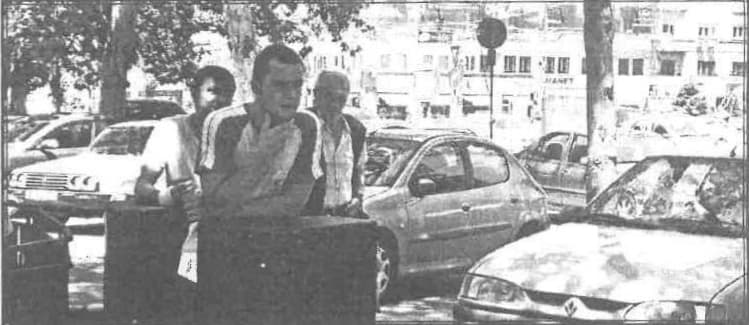
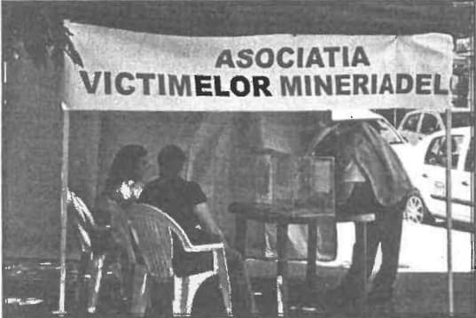
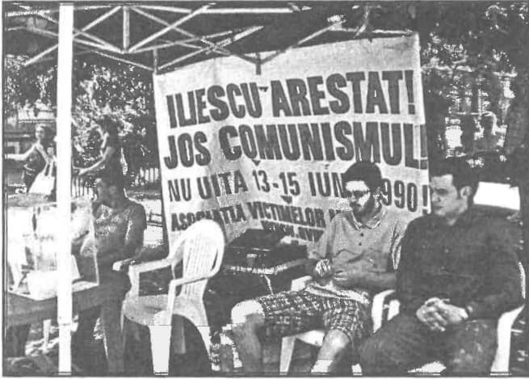
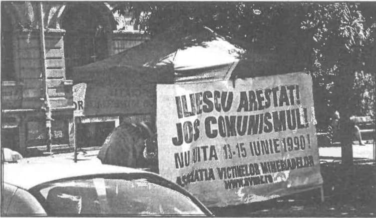
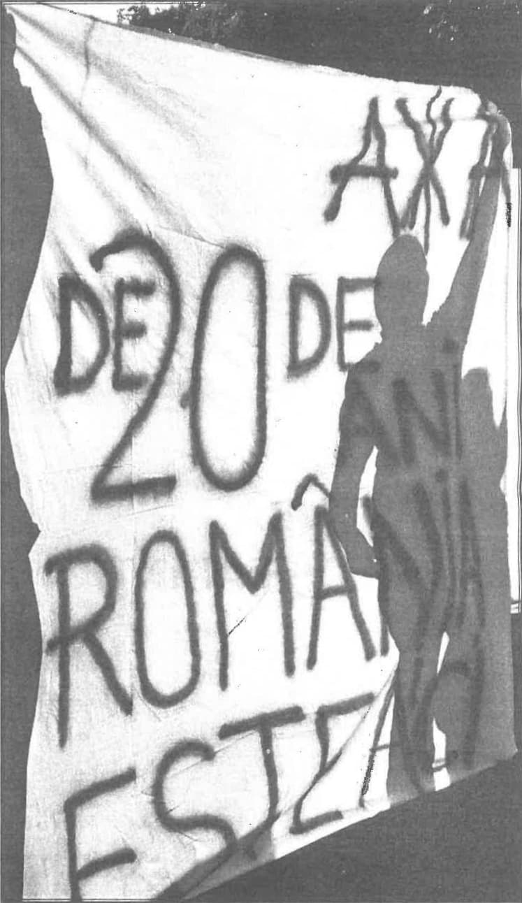
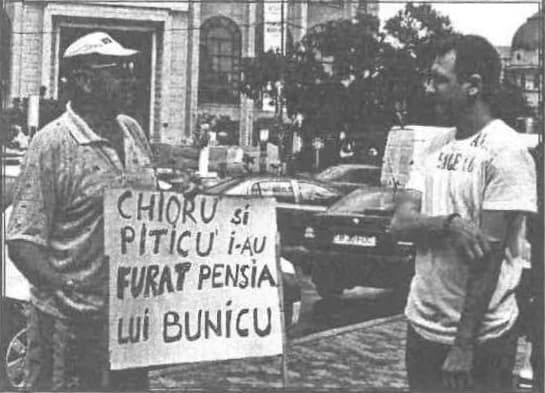
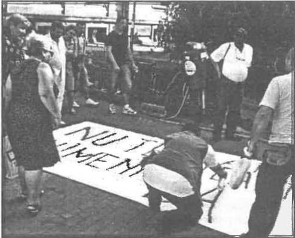
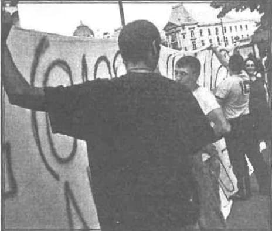
În perioada 7-15 iunie Asociația victimelor mineriadelor din România a organizat o acțiune stradală de informare, documentare și protest referitor la manifestația anticomunistă din aprilie-mai 1990 - cunoscută sub numele de Piața Universității - și la reprimarea sângeroasă a manifestației din zilele de 13, 14 și 15 iunie 1990 - cunoscută sub numele de Mineriada 13-15 iunie 1990. Redacția AXA s-a alăturat AVMR-ului în această acțiune. La fel a făcut și un grup de profesori. Din păcate, doar atât!
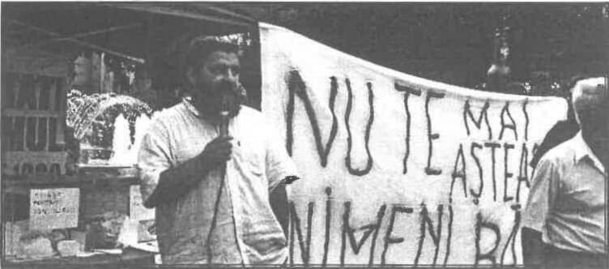
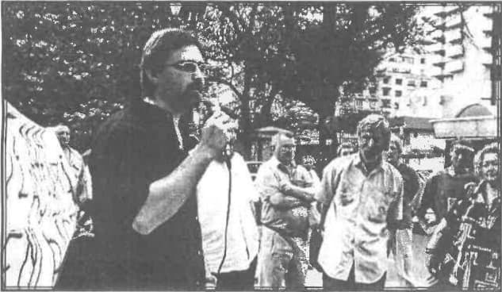
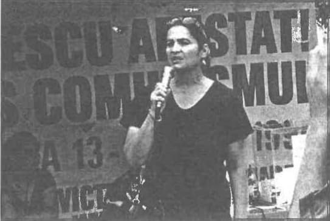
Au trecut 20 de ani și prea puțină lume își mai aduce aminte de ceea ce a însemnat protestul studenților împotriva continuării comunismului în România. Și tot puțini sunt aceia care își mai amintesc că manifestația din Piața Universității a fost suprimată în zilele de 13, 14 și 15 iunie 1990, prin violență extremă - numeroase crime și mutilări - condusă și controlată de puterea comunistă (sau neocomunistă) de la București, cu sprijinul minerilor. De atunci și până astăzi neocomunismul s-a instalat în România, purtând mai multe nume de partide politice. Toți conducătorii României din 90 și până azi au fost sau sunt comuniști.
Idealurile protestatarilor din Piața Universității au rămas până astăzi la fel de actuale ca acum 20 de ani: alungarea comunismului - vinovat de genocid împotriva poporului român pentru aproape 50 de ani - și a neocomunismului - continuator degradat al comunismului care se face vinovat la rândul lui de dezastrul în care se află acum România. Venirea minerilor la București - chemați și dezinformați și incitați la omor în mod criminal de către Ion Iliescu și alte cadre ale fostului pcr - este cea mai gravă acțiune de crimă organizată îndreptată împotriva poporului român, de la impunerea comunismului în România. Comunism înseamnă crimă.
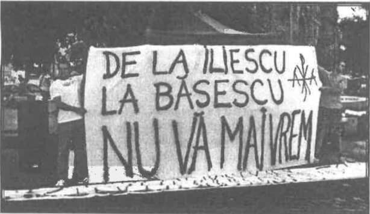
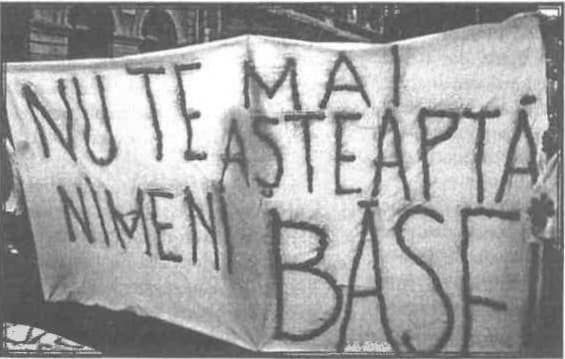
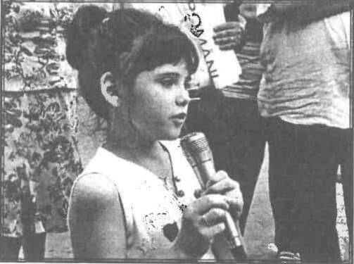
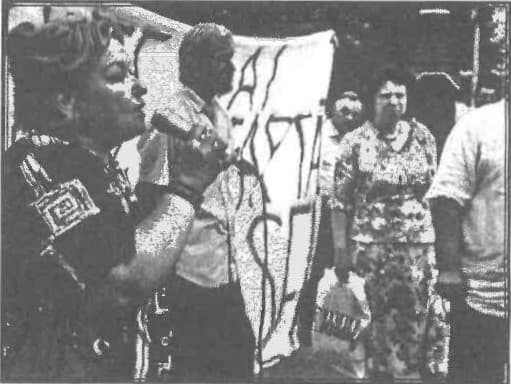
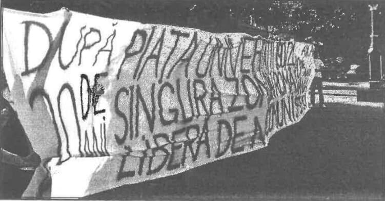
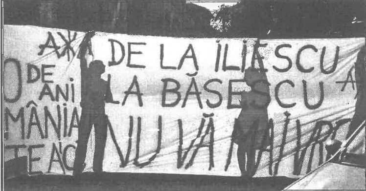